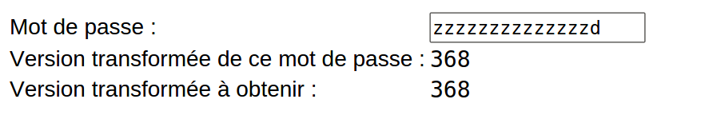
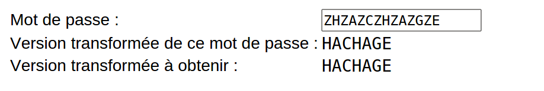
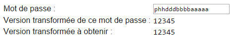
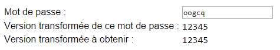

Pour ne pas que les mots de passe soient visibles sur les serveurs, on en stocke une version transformée.
Ici la transformation a été mal choisie. Découvrez sa logique et hackez le système.
Plus le mot de passe que vous trouvez est court, plus vous obtenez de points.
| Mot de passe : | |
| Version transformée de ce mot de passe : | |
| Version transformée à obtenir : |

On remarque que chaque nouvelle lettre augmente la valeur de la version transformée. En regardant de plus près, on voit que 'A' augmente de 1, 'B' augmente de 2, 'C' augmente de 3, etc. On s'arrange alors pour trouver 368.

On peut commencer par écrire des lettres au hasard. On remarque qu'un changement de lettre à un endroit précis du mot de passe change uniquement un endroit précis de la transformation.
Plus exactement, pour une paire de deux lettres consécutives dans le mot de passe on a une lettre dans la transformation. En fait, la transformée est la lettre dont le rang est égal à la somme des rangs des deux lettres (dont on soustrait 26 si la somme dépasse 26).
Par exemple le rang de 'A' est 1 donc 'AA' donne la lettre de rang 1+1 = 2, c'est-à-dire 'B'. Il suffit donc de chercher des combinaisons de deux lettres pour chaque lettre du code de hachage. On a plusieurs solutions, mais la plus simple est de voir que si on met un Z et une deuxième lettre, on obtient toujours la deuxième lettre dans le code de hachage, car le rang de 'Z' est 26.
On remarque que chaque lettre ajoute 1 aux chiffres du code de hachage situés à certaines positions. Par exemple 'a' ajoute 1 à la cinquième position alors que 'b' ajoute 1 à la quatrième position, 'c' ajoute 1 aux deux dernières positions, etc. On parcourt l'alphabet pour chercher les lettres qui ajoutent 1 à chacune des positions :
Ces lettres permettent d'obtenir n'importe quel nombre à 5 chiffres, en particulier 'phhdddbbbbaaaaa' donne '12345'.
 />
Pour obtenir un meilleur score, il faut comprendre que chaque lettre ajoute en fait la représentation de son rang en binaire au nombre obtenu. Il faut donc trouver un moyen de former '12345' par une somme de nombres ne contenant que des 0 et 1.
On peut par exemple faire la somme suivante : 11111 + 01111 + 00111 + 00011 + 00001 = 12345
La première de ces valeurs vaut 31, donc ne correspond pas au rang d'une lettre. On modifie donc légèrement notre somme pour obtenir :
01111 + 01111 + 00111 + 00011 + 10001 = 12345
On détermine lettre correspondant à chaque valeur : o, o, g, c, q, ce qui donne 'oogcq'.

Les transformations décrites dans ce sujet s'appellent des "fonctions de hachage". La version transformée est appelé "code de hachage" du mot de passe.
Le hachage est un outil utilisé dans plusieurs contextes en cryptographie. Les sites internet qui demandent une authentification stockent les versions hachées des mots de passe, au lieu des mots de passe proprement dits.
Ainsi, si des hackers arrivent à accéder au site, ils ne trouvent pas les mots de passe en clair dans la base de données, mais les versions hachées. Ils ne pourront pas utiliser les mots de passe pour tromper le système d'autentification, sauf si la fonction de hachage est trop simple (comme dans l'exercice) et qu'ils trouvent un mot de passe qui a la bonne version hachée.
Exemple : Si vous oubliez votre mot de passe, les sites bien sécurisés ne peuvent pas vous renvoyer votre mot de passe car ils ne l'ont pas stocké directement ! C'est pourquoi on vous demande de créer un nouveau mot de passe.